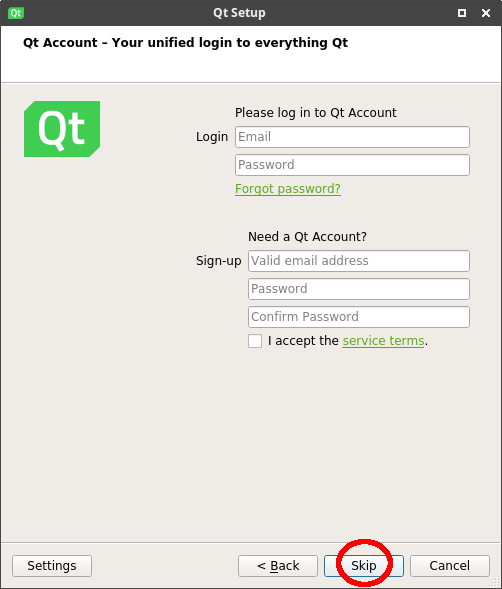
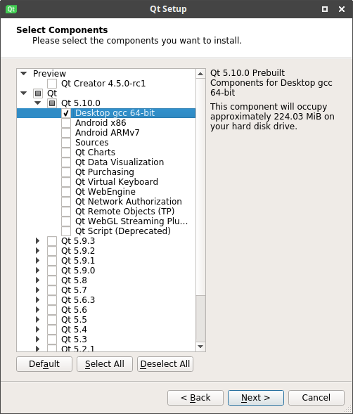

Installing Qt for desktop
Qt is a cross-platform application framework used by Pegasus. At least Qt 5.7 is requred, with 5.9 or later recommended for better performance on embedded platforms. For desktop platforms you can get the Qt tools using their installer:
Then walk through the installation, and select the component "Desktop gcc" (Linux), "MinGW" (Windows) or "macOS" for macOS:
|  |  |
Now you have the Qt libraries and the Qt Creator IDE installed.
Components on Windows
On Windows you can choose between MinGW and MSVC compiler packages. If you're planning to edit the source code and you want to use Visual Studio, you can select the matching MSVC component instead of MinGW.
Embedded
These instructions are for desktop platforms. For embedded devices, you have to compile Qt manually, or use the prebuilt libraries available on Pegasus' GitHub page. See Cross compile Qt.
Alternative installations
Linux
On many Linux distros, such as Debian (Ubuntu, Mint, ...) the Qt libraries available in the official repositories are often several years old (as a trade-off between stability and access to the latest software).
Ubuntu
On Ubuntu, you can use the following PPAs to get the latest Qt releases:
# for 14.04, use this: sudo add-apt-repository ppa:beineri/opt-qt593-trusty # for 16.04, use this: sudo add-apt-repository ppa:beineri/opt-qt593-xenial sudo apt-get update sudo apt-get install \ qt59declarative \ qt59graphicaleffects \ qt59gamepad \ qt59imageformats \ qt59multimedia \ qt59svg \ qt59tools source /opt/qt59/bin/qt59-env.sh
To use this installation, you will need to call /opt/qt59/bin/qt59-env.sh every time you open a new terminal. You can do this by adding the source ... line above to your ~/.bashrc file (or whatever shell you use).
Arch
If you're using Arch, you can get Qt from AUR; here's the relevant wiki page.
Windows/MSYS2
Qt is availale in the MSYS2 repos. See https://wiki.qt.io/MSYS2.
Windows/vcpkg
At the time of writing, Qt 5.8 is available in vcpkg as a port.
macOS/Homebrew
Qt is availale in the Homebrew repos, but may not be up to date. See http://brewformulas.org/qt5.